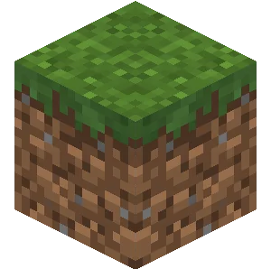

Inicio
Sobre o Minecraft
Oque os blocos fazem
Galeria de fotos
Contato
Tabela
Jogo
Jogo temático de minecraft
Jogue um jogo novo — defenda seu castelo dos zumbis!
🧟 Defesa do Castelo
Pontos:
0
Vidas:
3
⏸ Pause
PAUSADO
🏰
💀 Você perdeu!
Um zumbi alcançou o castelo.
🔄 Reiniciar